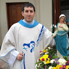

Padre Javier Cesar Mesa párroco.
Padre Mario Barenssano.

Alejandra Liendo Secretaria de actas.

Oscar Jezzerniki Referente de Mantenimiento.
Marcelo Bataller pastoral de Madrugadores.
Mario Dominicci Renovación Carismática.
Lucas Carranza Pastoral de los Jóvenes.
Marcelo Bataller pastoral de Madrugadores.
Marcelo Bataller pastoral de Madrugadores.
Marcelo Bataller pastoral de Madrugadores.
Marcelo Bataller pastoral de Madrugadores.
Marcelo Bataller pastoral de Madrugadores.